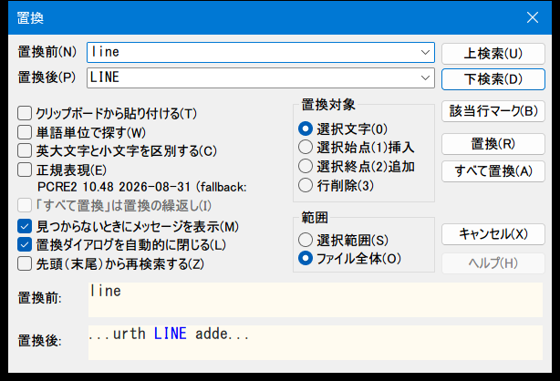

置換ダイアログ インラインプレビュー
置換ダイアログ(CDlgReplace)内に、カーソルに最も近い一致1件だけをライブ表示する「置換前/置換後」のインラインサンプル欄を追加した機能の設計記録。結果一覧ダイアログではなく、既存ダイアログへの追記であることを明記する。

設計方針
置換ダイアログで検索文字列・置換後文字列・オプション(大文字/小文字区別、単語単位、正規表現)を入力するたびに、実際に置換を実行せずその場で結果のサンプルを確認できるようにした。既存のCDlgReplaceに、置換前1行・置換後1行の静的テキスト欄を2つ追加するだけの、小さく自己完結した拡張である。
sakura_core/my_config.hのフラグ定義コメントには、複数の一致箇所を一覧表示する専用ダイアログ(CDlgReplacePreview、Command_REPLACE_PREVIEW()、IDC_BUTTON_PREVIEW)を想定した記述が残っている。しかし実際にコミットda538dd99で実装された内容はこれとは異なり、そのクラス・関数はリポジトリ中に一度も存在しない。本ドキュメントは実際のコード(既存ダイアログ内のインライン1件プレビュー)を対象に書いている。
複数の一致箇所を集めて並べるのではなく、カーソル位置から最も近い一致を1件だけ探し、その前後を「置換前」「置換後」の2行に表示する。全行を回して一致を集める処理は行わない。
ComputeReplaceSample()はCommand_REPLACE_ALLやDoGrepReplaceFile(Grep置換)の内部ロジックを呼び出したり共有したりしない、完全に独立した専用コードである。
文書を一切変更しない読み取り専用の計算。検索履歴(CSearchKeywordManager)への登録や入力欄自体の書き換えも行わない。
01実装 — サンプル計算
CViewCommander::ComputeReplaceSample()(宣言はCViewCommander.h、本体はCViewCommander_Search.cpp)が、指定した検索文字列・置換後文字列・オプションに対して「最初に見つかる一致箇所」を1件だけ探す。探索はカーソル行(nStartLine)から文書末尾まで、見つからなければ先頭からnStartLineまで折り返して行う、通常の「次を検索」と同じ考え方である。
一致箇所が見つかった行について、置換前の行全体(outBefore)と置換後の行全体(outAfter)、一致箇所の位置・長さ(outMatchPos/outMatchLenBefore/outMatchLenAfter)を返す。検索対象はCDocLine::GetLengthWithEOL()で改行込みの行(単発置換Command_REPLACEと同じ範囲)。
// 正規表現時: 行全体を置換して末尾を切り詰めるのではなく、
// 一致した部分文字列だけに Replace() をもう一度かけて
// $1 / $& 等の後方参照を解決する(境界計算を誤りにくいため)
CBregexp::Replace( ... ); // 一致部分文字列のみに対して実行
// 正規表現以外は CSearchAgent::CreateWordList + SearchStringWord(単語単位)、
// または CSearchStringPattern + CSearchAgent::SearchString(通常検索)長い行や改行を挟む一致にも対応する2つのヘルパーがある。
| ヘルパー | 役割 |
|---|---|
MakeContextWindow() | 無名namespace内。一致箇所の前後5文字だけを切り出し、省略した側に...を付ける。置換後欄が一致箇所を中心に収まるようにする |
VisualizeEol() | \r\n/\r/\nを↵記号に変換して表示する。強調表示位置(nHighlightPos/nHighlightLen)もこの変換後の位置に追従して補正される |
02実装 — UI: サンプル欄(一覧リストではない)
追加されたのはIDD_REPLACEダイアログ内の2行の静的テキスト欄のみで、別ウィンドウの一覧リスト(ListBox/ListView)ではない。
| コントロールID | 種別 | 表示内容 |
|---|---|---|
IDC_STATIC_REPLACESAMPLE_BEFORE | 通常のLTEXT | 「置換前:」欄。一致した語句そのもの(文脈なし)を表示。WM_CTLCOLORSTATICをDispatchEvent()で横取りし、エディタの通常テキストの配色(CTypeSupport(pcEditView, COLORIDX_TEXT))で描画 |
IDC_STATIC_REPLACESAMPLE_AFTER | SS_OWNERDRAW | 「置換後:」欄。OnDrawItem()が自前描画。周辺の文脈込みで表示し、置換された語句の部分だけを青字(RGB(0,0,255))で強調 |
いずれもフォントはCTypeSupport::GetTypeFont()で取得したエディタの設定フォント(通常テキスト)をWM_SETFONTで設定している。関連するサンプル欄用メンバ(CDlgReplace.h)はm_crSampleText/m_crSampleBack/m_hbrSampleBack/m_hFontSample/m_strSampleAfter/m_nSampleAfterHighlightPos/m_nSampleAfterHighlightLen。
03実装 — 更新タイミング
UpdateSamplePreview()が以下のタイミングで呼ばれ、サンプル欄を更新する。
OnInitDialog(ダイアログを開いた直後の初期表示)OnCbnEditChange(IDC_COMBO_TEXT/IDC_COMBO_TEXT2の入力欄編集中、1文字入力するたびに更新されるライブプレビュー)IDC_CHK_LOHICASE/IDC_CHK_WORD/IDC_CHK_REGULAREXPのチェック切替時(IDC_CHK_LOHICASE/IDC_CHK_WORDは元々コメントアウトされていたOnBnClickedのcaseを、このコミットで有効化して流用している)IDC_RADIO_TARGET系(置換対象の切替)・IDC_CHK_PASTE(クリップボード貼り付けチェック)変更時
UpdateSamplePreview()内では、CDlgFindのライブ入力プレビューと同じ手法でCEditView::m_strCurSearchKey/m_sCurSearchOptionを更新し、文書中の一致箇所をスクロールバー上にもマークしている(検索文字列が空ならマーク解除)。
04対象範囲(スコープ外の明示)
UpdateSamplePreview()内で明示的にガードされている、プレビュー非対応のケースがある。
- 置換対象ラジオが「置換」(
IDC_RADIO_REPLACE)以外(挿入/追加/行削除等)の場合、または「クリップボードから貼り付け」(IDC_CHK_PASTE)がチェックされている場合は、サンプル欄に「（この設定はサンプル表示に対応していません）」と表示し、実際の計算は行わない。my_config.hのコメントにも「位置依存・外部データ依存で行単位の事前計算が破綻しやすいため」と理由が記されている。 - このプレビューが対応するのは「置換」(現在のファイル内での「すべて置換」に使う対象設定)のみ。単発の1件置換(
Command_REPLACE)やGrep置換(ファイル横断、DoGrepReplaceFile)にはこのプレビューUI自体が組み込まれていない(CDlgReplaceとは別のダイアログのため対象外)。 - プレビューから直接「すべて置換」を実行する専用ボタン(
IDC_BUTTON_PREVIEW)は存在しない。既存のIDC_BUTTON_REPALCEALL(すべて置換)ボタンとそのハンドラ(Command_REPLACE_ALL)はこのコミットで変更された形跡がなく、実行経路は従来のまま。
05動作確認について
このコミット自体にビルド結果や実機確認についての記述は残っていない(コミットメッセージは「feat 置換ダイアログに結果プレビューを追加」の1行のみで、本文なし)。現時点のコードをgrepした限り、NKMM_FIX_REPLACE_PREVIEWは関連する6ファイル以外では参照されておらず、my_config.hのコメントが述べる別ダイアログ(CDlgReplacePreview)や専用コマンド(Command_REPLACE_PREVIEW)はリポジトリ内に一度も存在しない。ビルド・実機での動作確認は行われていない。
詳細な経緯・全記述はchangelog/NKMM_FIX_REPLACE_PREVIEW.mdを参照。
06変更ファイル一覧
sakura_core/cmd/CViewCommander.h—ComputeReplaceSample()の宣言sakura_core/cmd/CViewCommander_Search.cpp—ComputeReplaceSample()本体sakura_core/dlg/CDlgReplace.h— サンプル欄用メンバ、OnCbnEditChange()/DispatchEvent()/OnDrawItem()/UpdateSamplePreview()/SetSampleAfterText()の宣言sakura_core/dlg/CDlgReplace.cpp— 上記メンバ関数の実装本体。OnInitDialog/OnDestroy/OnBnClickedへのフック追加sakura_core/sakura_rc.h— 新規コントロールIDIDC_STATIC_REPLACESAMPLE_BEFORE(1906)/IDC_STATIC_REPLACESAMPLE_AFTER(1907)sakura_core/sakura_rc.rc—IDD_REPLACEダイアログに「置換前:」「置換後:」の2行を追加(UTF-16LEバイナリ差分、CLAUDE.md記載の手順で編集)sakura_core/my_config.h—NKMM_FIX_REPLACE_PREVIEWフラグを追加(コメント本文は実装と一致しない設計メモが残存)
新規に追加されたコードファイルは無い(既存のCDlgReplace.cpp/.hとCViewCommander_Search.cpp/.hへの追記のみ)。